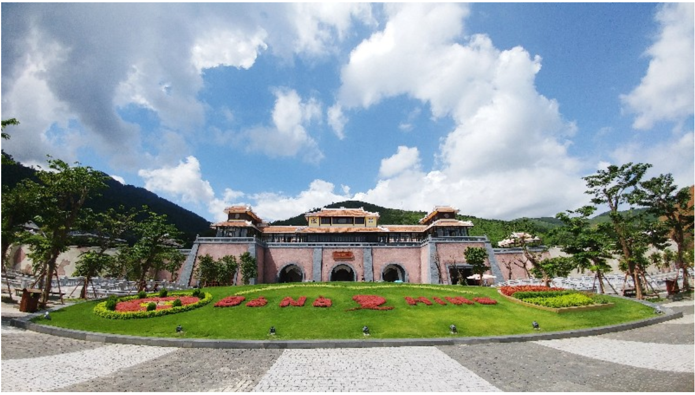
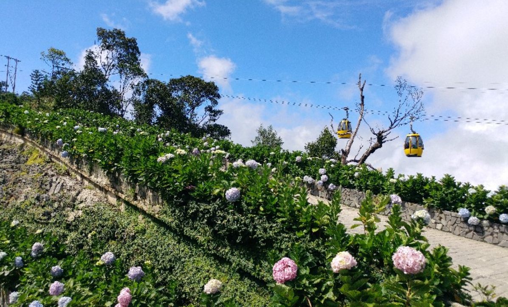
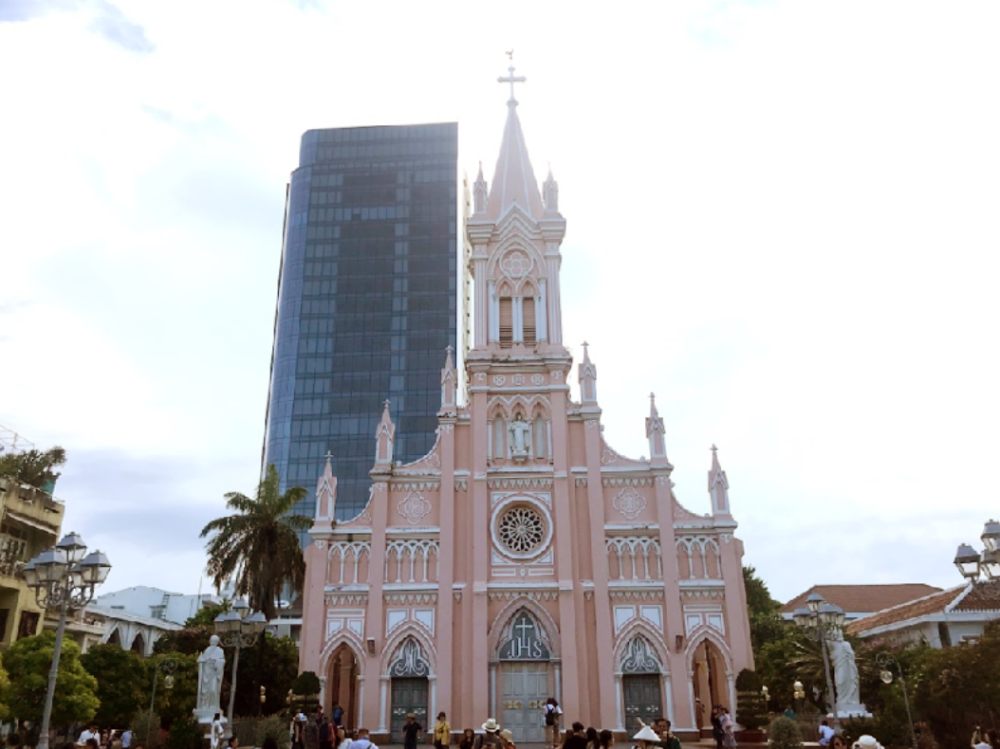
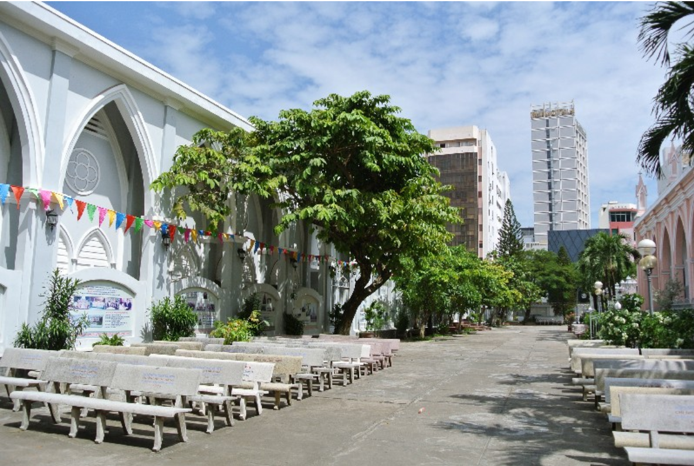
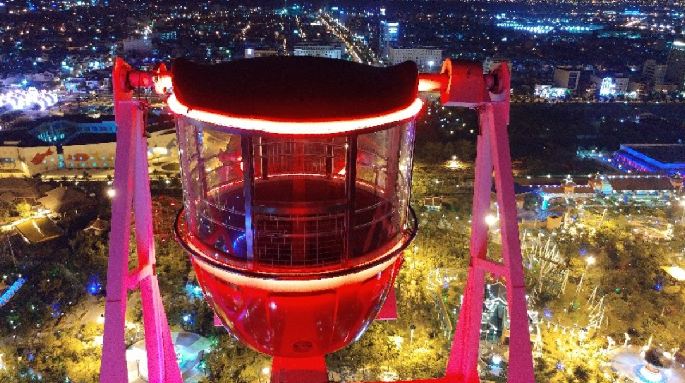
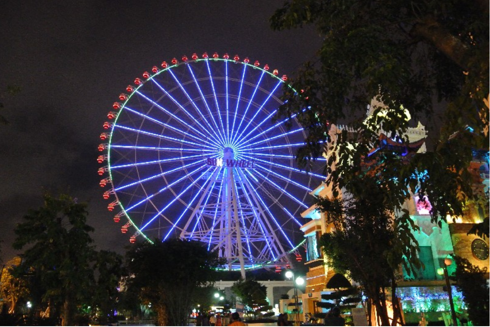

중간 지점에는 푸니쿨라(요금 별도 70,000VND), Debay 와인 저장고, 27m의 거대한 석가모니 상이 있는 영응사와 9개의 테마로 꾸며진 유럽식 정원 Le Jardin D’Amour가 위치해 있다. 정상에는 프랑스 마을을 비롯해 다양한 놀이 시설을 이용할 수 있는 판타지 파크, 밀랍 인형 박물관(요금 별도 100,000VND), 전망대 역할을 하는 종탑과 사원, 4성급 호텔인 머큐어 호텔(Mercure Ba Na Hills French Village)이 자리하고 있다.
워낙 높은 곳에 위치해 있어 날씨가 변덕스러우므로 긴 옷을 챙겨가도록 하자. 연간 방문자수가 150만 명에 달할 정도로 많은 이들이 찾는 곳이므로, 다낭에서 색다른 여행지를 찾고 있다면 고민하지 말고 바나 힐을 찾아가자. 매일 펼쳐지는 다양한 퍼포먼스는 바나 힐 홈페이지에서 확인할 수 있다.


미사 시간은 월~토 05:00, 17:00에 열리며, 일요일에는 6회(05:15, 08:00, 10:00, 15:00, 17:00, 18:30) 진행된다. 1923년 건축된 가톨릭 성당
다낭에 왔다면 꼭 들러야 할 명소
분홍빛 외관이 아름다운 곳으로 사진 촬영 명소로도 인기
 
바나 힐과 같은 선 그룹(Sun Group)에서 운영하는 작은 규모의 놀이공원.
시내 중심가에서 택시로 10분이면 도착할 수 있을 만큼 접근성이 좋다.
2014년에 개장해 시설, 환경이 깔끔하며 중국풍의 웅장한 건물과 화려한 조명이 돋보인다.
우리나라 놀이공원처럼 스릴 넘치는 놀이기구는 없지만 가족끼리 다 함께 즐기기 좋으며, 멋진 데이트 장소로도 손색이 없다.
다낭 시내 어디에서나 볼 수 있는 대관람차 선 휠(Sun Wheel)은 세계에서 4번째로 높은 관람차.
선 휠에 올라서면 아시아 파크는 물론, 시내를 한눈에 내려다볼 수 있어 인기 만점이다.
연인과는 로맨틱한 시간을, 친구, 가족과는 두고두고 기억될 만한 추억의 순간을 이곳에서 만들어 보자.

